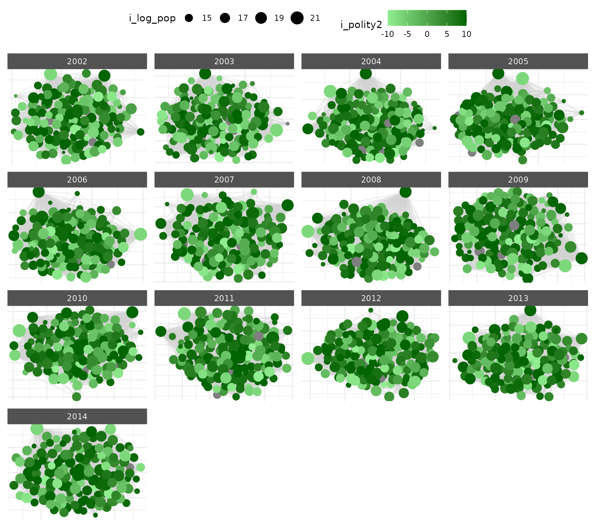

Netify: Manual Plotting with ggplot2
Cassy Dorff and Shahryar Minhas
2024-05-20
manual_plotting.RmdThis vignette provides an overview of how to create more customizable
plots using ggplot2 and just having netify
serve as the data preparation engine.
Lets load the necessary libraries.
Additionally, we’ll use the ggnewscale package to create
multiple legends when necessary in the same plot (e.g., if you want to
have legends for a color aesthetic for both nodes and edges).
if(!'ggnewscale' %in% rownames(installed.packages())){
install.packages('ggnewscale', repos='https://cloud.r-project.org') }
library(ggnewscale)Preparing data
First lets create a netlet object from some dyadic data using the
netify package.
# load icews data
data(icews)
# choose attributes
nvars = c( 'i_polity2', 'i_log_gdp', 'i_log_pop' )
dvars = c( 'matlCoop', 'verbConf', 'matlConf' )
#'
# create a netify object
netlet = netify(
dyad_data=icews, actor1='i', actor2='j',
time = 'year',
symmetric=FALSE, weight='verbCoop',
mode='unipartite', sum_dyads=FALSE,
actor_time_uniform=TRUE, actor_pds=NULL,
diag_to_NA=TRUE, missing_to_zero=TRUE,
nodal_vars = nvars,
dyad_vars = dvars
)
# print
print(netlet)## ✔ Hello, you have created network data, yay!## • Longitudinal## • Unipartite## • Asymmetric## • Weights from `verbCoop`## • No Loops Allowed## • Longitudinal: 13 Periods## • # Unique Row Actors: 152## • # Unique Column Actors: 152## • # Unique Actors: 152## nLoops nEdges density recip propNA
## 1 verbCoop N/A 124659 19.11395 0.9758868 N/A## • Nodal Features: i_polity2, i_log_gdp, i_log_pop## • Dyad Features: matlCoop, verbConf, matlConf## • Graph Features: NoneThis is a longitudinal, weighted network with nodal and dyadic attributes that we can use for coloring.
We can use the net_plot_data function to create a data
frame that can be used to create a plot using ggplot2.
net_plot_data processes a netify object to extract and set
up node and edge data according to specified plotting arguments. It
returns a list of components the only necessary ones for users are in
the net_dfs element. This element of the list contains two
objects: edge_data and nodal_data. These are
data frames that can be used to create a plot using
ggplot2.
# create a data frame for plotting
plot_data = net_plot_data(netlet)
# get relevant dfs
net_dfs = plot_data$net_dfs
# check structure of what's here
str(net_dfs)## List of 2
## $ edge_data :'data.frame': 124659 obs. of 11 variables:
## ..$ from : chr [1:124659] "Afghanistan" "Afghanistan" "Afghanistan" "Afghanistan" ...
## ..$ to : chr [1:124659] "Albania" "Albania" "Albania" "Albania" ...
## ..$ time : chr [1:124659] "2002" "2003" "2004" "2006" ...
## ..$ verbCoop: num [1:124659] 6 1 10 6 3 2 2 4 1 6 ...
## ..$ matlCoop: num [1:124659] 1 1 2 2 2 0 1 0 0 0 ...
## ..$ verbConf: num [1:124659] 0 0 0 3 0 0 0 0 0 0 ...
## ..$ matlConf: num [1:124659] 0 0 1 21 0 0 2 7 0 0 ...
## ..$ x1 : num [1:124659] 4.944 -0.844 4.929 -1.347 0.605 ...
## ..$ y1 : num [1:124659] -5.374 10.106 -4.834 9.984 0.486 ...
## ..$ x2 : num [1:124659] 5.098 -1.021 4.667 -1.397 0.709 ...
## ..$ y2 : num [1:124659] -5.695 10.514 -5.105 10.364 0.194 ...
## $ nodal_data:'data.frame': 1976 obs. of 10 variables:
## ..$ name : chr [1:1976] "Afghanistan" "Afghanistan" "Afghanistan" "Afghanistan" ...
## ..$ time : chr [1:1976] "2002" "2003" "2004" "2005" ...
## ..$ i_polity2 : int [1:1976] NA NA NA NA NA NA NA NA NA NA ...
## ..$ i_log_gdp : num [1:1976] 22.7 22.8 22.8 23 23 ...
## ..$ i_log_pop : num [1:1976] 16.9 16.9 17 17 17.1 ...
## ..$ x : num [1:1976] 4.944 -0.844 4.929 -2.189 -1.347 ...
## ..$ y : num [1:1976] -5.37 10.11 -4.83 5.61 9.98 ...
## ..$ name_text : chr [1:1976] "Afghanistan" "Afghanistan" "Afghanistan" "Afghanistan" ...
## ..$ name_label: chr [1:1976] "Afghanistan" "Afghanistan" "Afghanistan" "Afghanistan" ...
## ..$ id : chr [1:1976] "Afghanistan_2002" "Afghanistan_2003" "Afghanistan_2004" "Afghanistan_2005" ...
# check the first few rows of the edge data
head(net_dfs$edge_data)## from to time verbCoop matlCoop verbConf matlConf x1
## 1 Afghanistan Albania 2002 6 1 0 0 4.9439251
## 2 Afghanistan Albania 2003 1 1 0 0 -0.8438451
## 3 Afghanistan Albania 2004 10 2 0 1 4.9292862
## 4 Afghanistan Albania 2006 6 2 3 21 -1.3471888
## 5 Afghanistan Albania 2007 3 2 0 0 0.6047343
## 6 Afghanistan Albania 2008 2 0 0 0 6.4941229
## y1 x2 y2
## 1 -5.3742876 5.098347 -5.6954429
## 2 10.1059532 -1.020616 10.5140109
## 3 -4.8341786 4.666942 -5.1051429
## 4 9.9843405 -1.396830 10.3638320
## 5 0.4859708 0.709353 0.1935343
## 6 -6.6093371 6.306641 -7.0588512
# check the first few rows of the nodal data
head(net_dfs$nodal_data)## name time i_polity2 i_log_gdp i_log_pop x y
## 1 Afghanistan 2002 NA 22.74550 16.86005 4.9439251 -5.3742876
## 2 Afghanistan 2003 NA 22.83014 16.93546 -0.8438451 10.1059532
## 3 Afghanistan 2004 NA 22.84418 16.97479 4.9292862 -4.8341786
## 4 Afghanistan 2005 NA 22.95061 17.01055 -2.1890941 5.6094818
## 5 Afghanistan 2006 NA 23.00280 17.05195 -1.3471888 9.9843405
## 6 Afghanistan 2007 NA 23.13230 17.06988 0.6047343 0.4859708
## name_text name_label id
## 1 Afghanistan Afghanistan Afghanistan_2002
## 2 Afghanistan Afghanistan Afghanistan_2003
## 3 Afghanistan Afghanistan Afghanistan_2004
## 4 Afghanistan Afghanistan Afghanistan_2005
## 5 Afghanistan Afghanistan Afghanistan_2006
## 6 Afghanistan Afghanistan Afghanistan_2007The x and y in nodal_data and
the x1, y1, x2, and
y2 in edge_data are the coordinates of the
nodes and edges, respectively. These are the coordinates that will be
used to plot the network.
Changing the layout
By default layouts for node positions are drawn from the
layout_nicely algorithm in the igraph package.
Users can specify other layouts as, for example, say that you wanted to
use the fruchterman.reingold algorithm instead:
# create a df using fr instead
plot_data_kk = net_plot_data(netlet,
list(
layout='kamada.kawai'
)
)
# see new x-y coordinates
lapply(plot_data_kk$net_dfs, head)## $edge_data
## from to time verbCoop matlCoop verbConf matlConf x1
## 1 Afghanistan Albania 2002 6 1 0 0 2.9072353
## 2 Afghanistan Albania 2003 1 1 0 0 -5.4075743
## 3 Afghanistan Albania 2004 10 2 0 1 3.0084361
## 4 Afghanistan Albania 2006 6 2 3 21 -4.0854283
## 5 Afghanistan Albania 2007 3 2 0 0 -0.9822983
## 6 Afghanistan Albania 2008 2 0 0 0 2.6441341
## y1 x2 y2
## 1 2.8933625 4.0451740 -1.414405
## 2 -1.7307911 -4.9471775 1.491455
## 3 -2.8270133 3.9931021 -3.996812
## 4 0.4875206 0.7198861 1.746206
## 5 -4.8566299 -1.8800679 -4.074513
## 6 -0.5325870 0.0721004 -1.842811
##
## $nodal_data
## name time i_polity2 i_log_gdp i_log_pop x y
## 1 Afghanistan 2002 NA 22.74550 16.86005 2.9072353 2.8933625
## 2 Afghanistan 2003 NA 22.83014 16.93546 -5.4075743 -1.7307911
## 3 Afghanistan 2004 NA 22.84418 16.97479 3.0084361 -2.8270133
## 4 Afghanistan 2005 NA 22.95061 17.01055 -7.5869657 0.5068657
## 5 Afghanistan 2006 NA 23.00280 17.05195 -4.0854283 0.4875206
## 6 Afghanistan 2007 NA 23.13230 17.06988 -0.9822983 -4.8566299
## name_text name_label id
## 1 Afghanistan Afghanistan Afghanistan_2002
## 2 Afghanistan Afghanistan Afghanistan_2003
## 3 Afghanistan Afghanistan Afghanistan_2004
## 4 Afghanistan Afghanistan Afghanistan_2005
## 5 Afghanistan Afghanistan Afghanistan_2006
## 6 Afghanistan Afghanistan Afghanistan_2007Creating a plot
Now that we have the data, we can create a plot using
ggplot2. We’ll use the geom_segment and
geom_point (or, geom_label,
geom_text, and the `ggrepel package equivalents) functions
to plot the edges and nodes, respectively.
ggplot() +
geom_segment(
data = net_dfs$edge_data,
aes(
x=x1,
y=y1,
xend=x2,
yend=y2
),
color='lightgrey',
alpha=.2
) +
geom_point(
data = net_dfs$nodal_data,
aes(
x=x,
y=y,
size=i_log_pop,
color=i_polity2
)
) +
scale_color_gradient(low='lightgreen', high='darkgreen') +
facet_wrap(~time, scales='free') +
theme_netify()
Say that we wanted to add in some additonal edge information to the
plot, say information about the matlConf dyadic attribute.
Lets say that we wanted to highlight edges of verbal cooperation that
were occurring at the same time that higher than average levels of
material conflict were occurring. First lets create the variable in the
edge data.
if(!'dplyr' %in% rownames(installed.packages())){
install.packages('dplyr', repos='https://cloud.r-project.org') }
library(dplyr)##
## Attaching package: 'dplyr'## The following objects are masked from 'package:stats':
##
## filter, lag## The following objects are masked from 'package:base':
##
## intersect, setdiff, setequal, union
# create high_matlConf variable
net_dfs$edge_data = net_dfs$edge_data |>
group_by(time) |>
mutate(
high_matlConf = matlConf > mean(matlConf, na.rm=TRUE)
) |>
ungroup() |>
as.data.frame()
# check
head(net_dfs$edge_data)## from to time verbCoop matlCoop verbConf matlConf x1
## 1 Afghanistan Albania 2002 6 1 0 0 4.9439251
## 2 Afghanistan Albania 2003 1 1 0 0 -0.8438451
## 3 Afghanistan Albania 2004 10 2 0 1 4.9292862
## 4 Afghanistan Albania 2006 6 2 3 21 -1.3471888
## 5 Afghanistan Albania 2007 3 2 0 0 0.6047343
## 6 Afghanistan Albania 2008 2 0 0 0 6.4941229
## y1 x2 y2 high_matlConf
## 1 -5.3742876 5.098347 -5.6954429 FALSE
## 2 10.1059532 -1.020616 10.5140109 FALSE
## 3 -4.8341786 4.666942 -5.1051429 FALSE
## 4 9.9843405 -1.396830 10.3638320 TRUE
## 5 0.4859708 0.709353 0.1935343 FALSE
## 6 -6.6093371 6.306641 -7.0588512 FALSENow that we have the new varaible in the data.frame, we can plot by
it but note that we will have a color aesthetic for points and segments,
ggplot2 by default only supports one legend by aesthetic.
We can get around this by using the new_scale_color
function from the `ggnewscale package.
# color line segments by this new variable
ggplot() +
geom_segment(
data = net_dfs$edge_data,
aes(
x=x1,
y=y1,
xend=x2,
yend=y2,
color=factor(high_matlConf)
),
alpha=.2
) +
scale_color_manual(values=c('lightgrey', 'red')) +
new_scale_color() +
geom_point(
data = net_dfs$nodal_data,
aes(
x=x,
y=y,
size=i_log_pop,
color=i_polity2
)
) +
scale_color_gradient(low='lightgreen', high='darkgreen') +
facet_wrap(~time, scales='free') +
theme_netify()